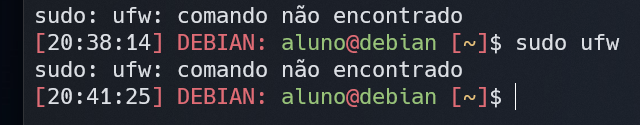
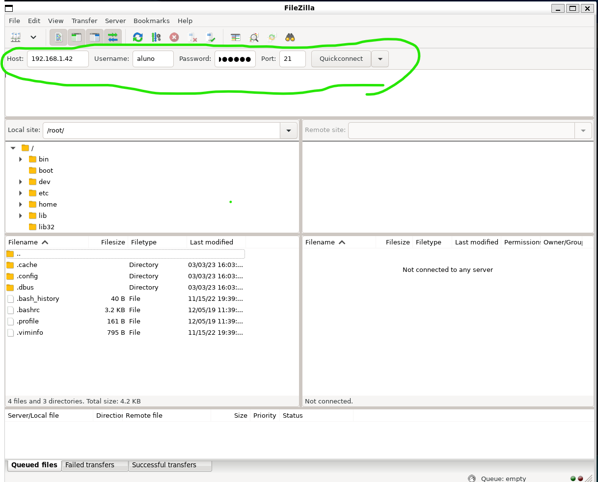
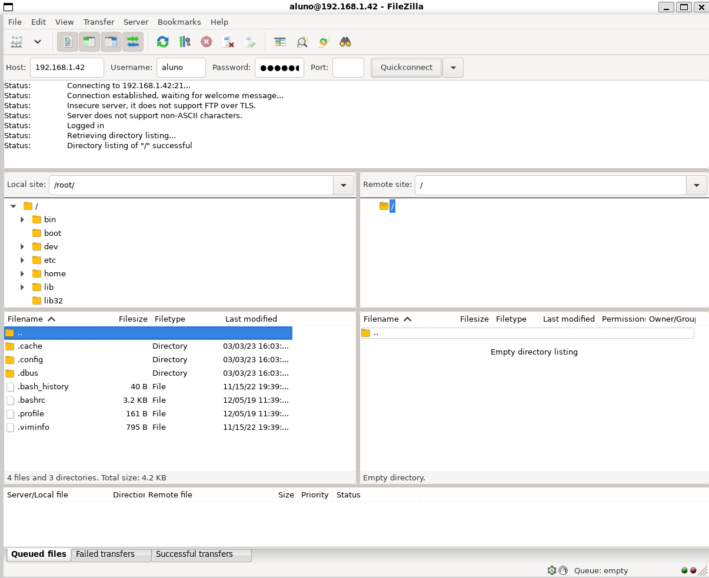

Departamento de Ciência da Computação
GCC125 - Rede de Computadores - 2022/2
Departamento de Ciência da Computação
GCC125 - Rede de Computadores - 2022/2
Professor: Hermes Pimenta de Moraes Júnior
Turma: 10A
Grupo: U
Alunos:
sudo apt-get update && sudo apt-get upgrade
// Atualiza Pacotes
sudo apt install vsftpd
//Comando para instalar o serviço ftp, o serviço vai ser iniciado após a instalação
systemctl status vsftpd
// Comando para verificar o status do serviço

// Se não estivesse ativo iríamos usar o comando abaixo para iniciar:
sudo systemctl enable --now vsftpd
O servidor não possui o serviço de firewall(ufw) instalado, a imagem abaixo mostra quando consultamos se ele existe:
Caso possuíssemos, iríamos rodar os seguintes comandos:
sudo ufw allow 20/tcp
sudo ufw allow 21/tcp
sudo ufw allow 990/tcp
sudo ufw allow 5000:10000/tcp
//FTP usa a porta 20 para o modo ativo, porta 21 para comandos e as outras para modo passivo.
Vamos utilizar o mesmo usuário do a acesso ao servidor que no caso é aluno para este trabalho.
sudo mkdir /ftp
// Criando a pasta para o ftp
sudo chown aluno /ftp
// altera o proprietário do diretório /ftp para o usuário aluno
sudo vim /etc/vsftpd.conf
//Abrindo o arquivo de configuração do serviço vsftpd
//Vamos retirar os comentários das seguintes linhas do arquivo de configuração:
...
anonymous_enable=NO
local_enable=YES
write_enable=YES
...
//Pode ser que algumas configurações já estejam sem comentário entretanto são esse que precisamos tirar os comentários
//Depois adicionamos a seguinte linha no final do arquivo de configuração:
local_root=/ftp
// Isto especifica o diretório raiz para o qual os usuários do FTP serão conectados após fazerem login
//Para salvar o arquivo e fecha-lo no vim clicamos na teclas ESC depois digitamos :wq em as flags w=write e q=quit
Por questões de segurança, vamos bloquear o usuário do ftp a ter acesso
somente ao diretório padrão e seus sub diretórios, pois por padrão o ftp
permite ao usuário acessar todos os arquivos do servidor.
// Temos que retirar os comentários das seguintes linhas do arquivo de configuração citado anteriormente:
...
chroot_local_user=YES
chroot_list_enable=YES
chroot_list_file=/etc/vsftpd.chroot_list
...
// Vamos adicionar a seguinte linha
allow_writeable_chroot=YES
// Esse comando permite que os usuários com chroot habilitado possam gravar em seus diretórios raiz
// vamos definir a permissão padrão para arquivos criados retirando o comentário da linha:
local_umask=0002
// clicamos em Esc e depois digitamos :wq para salvar e sair do arquivo
// Para testar o funcionamento do ftp utilizamos o filezilla, primeiro instalamos ele em nossas máquinas pessoal e rodamos ele com os respectivos comandos:
sudo apt install filezilla
sudo filezilla
Uma interface gráfica foi aberta e nela colocamos as informações necessárias para verificarmos o funcionamento do ftp.
Obtivemos sucesso:
// Vamos criar o arquivo chroot_list para especificar quais usuários devem ser restritos a seus próprios diretórios de trabalho (chrooted) quando se conectam ao servidor FTP
sudo touch /etc/vsftpd.chroot_list
// Para verificar se o arquivo foi criado digitamos:
sudo vim /etc/vsftpd.chroot_list
// Para aplicarmos as alterações vamos reiniciar o serviço vsftpd com seguinte comando:
sudo systemctl restart --now vsftpd
// Agora para verificarmos se o serviço está rodando digitamos:
sudo systemctl status vsftpd
// O resultado será o abaixo:
192.168.1.41Inicialmente, instalamos os pacotes na VM que será o servidor DNS (192.168.1.41)
sudo apt install bind9
sudo apt install dnsutils
Verificamos o seguinte arquivo de configuração de servidores DNS.
sudo nano /etc/bind/named.conf.options
Ficando disposto assim:
forwarders {
1.1.1.1; // Cloudflare DNS
8.8.4.4; // Google DNS
8.8.8.8; // Google DNS
};
Abrimos o arquivo:
sudo nano /etc/bind/named.conf.local
E adicionamos as seguintes configurações:
zone "dns.grupou.gcc125.br" {
type master;
file "/etc/bind/db.dns.grupou.gcc125.br";
};
zone "www.grupou.gcc125.br" {
type master;
file "/etc/bind/db.www.grupou.gcc125.br";
};
zone "ftp.grupou.gcc125.br" {
type master;
file "/etc/bind/db.ftp.grupou.gcc125.br";
};
zone "time.grupou.gcc125.br" {
type master;
file "/etc/bind/db.time.grupou.gcc125.br";
};
Criamos os arquivos dbdos domínios:
sudo cp /etc/bind/db.local /etc/bind/db.dns.grupou.gcc125.br
sudo cp /etc/bind/db.local /etc/bind/db.www.grupou.gcc125.br
sudo cp /etc/bind/db.local /etc/bind/db.ftp.grupou.gcc125.br
sudo cp /etc/bind/db.local /etc/bind/db.time.grupou.gcc125.br
Editamos cada arquivo para configurar o endereços IPs dos serviços:
sudo nano /etc/bind/db.dns.grupou.gcc125.br
sudo nano /etc/bind/db.www.grupou.gcc125.br
sudo nano /etc/bind/db.ftp.grupou.gcc125.br
sudo nano /etc/bind/db.time.grupou.gcc125.br
/etc/bind/db.dns.grupou.gcc125.br
;
; BIND data file for local loopback interface
;
$TTL 604800
@ IN SOA dns.grupou.gcc125.br. root.dns.grupou.gcc125.br. (
2 ; Serial
604800 ; Refresh
86400 ; Retry
2419200 ; Expire
604800 ) ; Negative Cache TTL
;
@ IN NS dns.grupou.gcc125.br.
@ IN A 192.168.1.41
@ IN AAAA ::1
/etc/bind/db.www.grupou.gcc125.br
;
; BIND data file for local loopback interface
;
$TTL 604800
@ IN SOA www.grupou.gcc125.br. root.www.grupou.gcc125.br. (
2 ; Serial
604800 ; Refresh
86400 ; Retry
2419200 ; Expire
604800 ) ; Negative Cache TTL
;
@ IN NS www.grupou.gcc125.br.
@ IN A 192.168.1.42
@ IN AAAA ::1
/etc/bind/db.ftp.grupou.gcc125.br
;
; BIND data file for local loopback interface
;
$TTL 604800
@ IN SOA ftp.grupou.gcc125.br. root.ftp.grupou.gcc125.br. (
2 ; Serial
604800 ; Refresh
86400 ; Retry
2419200 ; Expire
604800 ) ; Negative Cache TTL
;
@ IN NS ftp.grupou.gcc125.br.
@ IN A 192.168.1.42
@ IN AAAA ::1
/etc/bind/db.time.grupou.gcc125.br
;
; BIND data file for local loopback interface
;
$TTL 604800
@ IN SOA time.grupou.gcc125.br. root.time.grupou.gcc125.br. (
2 ; Serial
604800 ; Refresh
86400 ; Retry
2419200 ; Expire
604800 ) ; Negative Cache TTL
;
@ IN NS time.grupou.gcc125.br.
@ IN A 192.168.1.41
@ IN AAAA ::1
Reiniciamos o serviço
sudo systemctl restart bind9.service
Editamos o arquivo para resolver o Reverse zone:
sudo nano /etc/bind/named.conf.local
zone "1.168.192.in-addr.arpa" {
type master;
file "/etc/bind/db.1.168.192";
};
Criamos o arquivo /etc/bind/db.1.168.192
sudo cp /etc/bind/db.127 /etc/bind/db.1.168.192
E o editamos para o seguinte estado com sudo nano /etc/bind/db.1.168.192:
;
; Zone file for 1.168.192.in-addr.arpa
;
$TTL 604800
@ IN SOA grupou.gcc125.br. root.grupou.gcc125.br. (
3 ; Serial
604800 ; Refresh
86400 ; Retry
2419200 ; Expire
604800 ) ; Negative Cache TTL
;
@ IN NS ns.
41 IN PTR ns.grupou.gcc125.br.
Então reiniciamos o serviço:
sudo systemctl restart bind9.service
Checamos nosso domínio criado com nslookup grupou.gcc125.br e obtemos a seguinte resposta indicando que o serviço está funcionando:
Server: 192.168.1.41
Address: 192.168.1.41#53
** server can't find grupou.gcc125.br: NXDOMAIN
Checamos também o domínio de nossos serviços:
nslookup dns.grupou.gcc125.br
Server: 192.168.1.41
Address: 192.168.1.41#53
Name: dns.grupou.gcc125.br
Address: 192.168.1.41
Name: dns.grupou.gcc125.br
Address: ::1
nslookup dns.grupou.gcc125.br
Server: 192.168.1.41
Address: 192.168.1.41#53
Name: www.grupou.gcc125.br
Address: 192.168.1.42
Name: www.grupou.gcc125.br
Address: ::1
nslookup dns.grupou.gcc125.br
Server: 192.168.1.41
Address: 192.168.1.41#53
Name: ftp.grupou.gcc125.br
Address: 192.168.1.42
Name: ftp.grupou.gcc125.br
Address: ::1
nslookup dns.grupou.gcc125.br
Server: 192.168.1.41
Address: 192.168.1.41#53
Name: time.grupou.gcc125.br
Address: 192.168.1.41
Name: time.grupou.gcc125.br
Address: ::1
Ao checarmos outros domínios externos também obtemos sucesso:
nslookup www.google.com
Server: 192.168.1.41
Address: 192.168.1.41#53
Non-authoritative answer:
Name: www.google.com
Address: 142.251.132.4
Name: www.google.com
Address: 2800:3f0:4001:833::2004
nslookup www.oul.com.br
Server: 192.168.1.41
Address: 192.168.1.41#53
Non-authoritative answer:
Name: www.oul.com.br
Address: 5.161.90.154
192.168.1.42 para ser cliente DNS da 192.168.1.41Na máquina 192.168.1.42, testamos o que acontece quando procuramos por um domínio externo:
nslookup www.oul.com.br
Server: 1.1.1.1
Address: 1.1.1.1#53
Non-authoritative answer:
Name: www.oul.com.br
Address: 5.161.90.154
Percebemos que o servidor DNS 1.1.1.1 é o responsável pela resposta. Assim, editamos o seguinte arquivo removendo os servidores DNS pré-estabelecidos como 1.1.1.1da Cloudflare, 8.8.8.8 da Google, etc. E deixamos apenas nosso servidor DNS:
sudo nano /etc/resolv.conf
domain dns.grupou.gcc125.br
search dns.grupou.gcc125.br
nameserver 192.168.1.41
Ao testarmos novamente a procura, obtemos a seguinte resposta utilizando nosso servidor DNS:
nslookup www.oul.com.br
Server: 192.168.1.41
Address: 192.168.1.41#53
Non-authoritative answer:
Name: www.oul.com.br
Address: 5.161.90.154
nslookup www.google.com
Server: 192.168.1.41
Address: 192.168.1.41#53
Non-authoritative answer:
Name: www.google.com
Address: 142.250.219.164
Name: www.google.com
Address: 2800:3f0:4001:833::2004
O mesmo para nossos serviçõs:
nslookup dns.grupou.gcc125.br
Server: 192.168.1.41
Address: 192.168.1.41#53
Name: dns.grupou.gcc125.br
Address: 192.168.1.41
Name: dns.grupou.gcc125.br
Address: ::1
nslookup dns.grupou.gcc125.br
Server: 192.168.1.41
Address: 192.168.1.41#53
Name: dns.grupou.gcc125.br
Address: 192.168.1.41
Name: dns.grupou.gcc125.br
Address: ::1
nslookup dns.grupou.gcc125.br
Server: 192.168.1.41
Address: 192.168.1.41#53
Name: dns.grupou.gcc125.br
Address: 192.168.1.41
Name: dns.grupou.gcc125.br
Address: ::1
nslookup dns.grupou.gcc125.br
Server: 192.168.1.41
Address: 192.168.1.41#53
Name: dns.grupou.gcc125.br
Address: 192.168.1.41
Name: dns.grupou.gcc125.br
Address: ::1
No servidor WEB (192.168.1.42), foi adicionado o restante dos trabalhos em Packet Tracer, assim como esta documentação. Com o seguinte comando, vamos ao diretório do servidor apache onde os arquivos html serão dispostos:
cd /var/www/html/
Com o seguinte comando, removemos todos os arquivos da pasta a fim de preparar o ambiente para nossos arquivos.
sudo rm *
Nossos arquivos são baixados do repositório https://github.com/Victorgonl/GCC125-20222-GrupoU através do comando wget dentro da pasta /var/www/html/.
sudo wget https://raw.githubusercontent.com/Victorgonl/GCC125-20222-GrupoU/master/index.html
sudo wget https://raw.githubusercontent.com/Victorgonl/GCC125-20222-GrupoU/master/ufla.png
sudo wget https://raw.githubusercontent.com/Victorgonl/GCC125-20222-GrupoU/master/TI-Relatorio-Etapa1.html
sudo wget https://raw.githubusercontent.com/Victorgonl/GCC125-20222-GrupoU/master/TI-Relatorio-Etapa2.html
sudo wget https://raw.githubusercontent.com/Victorgonl/GCC125-20222-GrupoU/master/TI-Relatorio-Etapa1.pdf
sudo wget https://raw.githubusercontent.com/Victorgonl/GCC125-20222-GrupoU/master/TI-Relatorio-Etapa2.pdf
sudo wget https://raw.githubusercontent.com/Victorgonl/GCC125-20222-GrupoU/master/TI-R1-1.1.png
sudo wget https://raw.githubusercontent.com/Victorgonl/GCC125-20222-GrupoU/master/TI-R1-3.2-1.png
sudo wget https://raw.githubusercontent.com/Victorgonl/GCC125-20222-GrupoU/master/TI-R1-3.2-2.png
sudo wget https://raw.githubusercontent.com/Victorgonl/GCC125-20222-GrupoU/master/TI-R1-3.3.png
sudo wget https://raw.githubusercontent.com/Victorgonl/GCC125-20222-GrupoU/master/TI-R1-3.4-1.png
sudo wget https://raw.githubusercontent.com/Victorgonl/GCC125-20222-GrupoU/master/TI-R1-3.4-2.png
sudo wget https://raw.githubusercontent.com/Victorgonl/GCC125-20222-GrupoU/master/TI-R1-3.4-3.png
sudo wget https://raw.githubusercontent.com/Victorgonl/GCC125-20222-GrupoU/master/TI-R1-3.4-4.png
sudo wget https://raw.githubusercontent.com/Victorgonl/GCC125-20222-GrupoU/master/TI-R1-3.4-5.png
sudo wget https://raw.githubusercontent.com/Victorgonl/GCC125-20222-GrupoU/master/TI-R2-1.1.png
sudo wget https://raw.githubusercontent.com/Victorgonl/GCC125-20222-GrupoU/master/TI-R2-1.2.png
sudo wget https://raw.githubusercontent.com/Victorgonl/GCC125-20222-GrupoU/master/TI-R2-1.7.png
sudo wget https://raw.githubusercontent.com/Victorgonl/GCC125-20222-GrupoU/master/TI-R2-1.8-1.png
sudo wget https://raw.githubusercontent.com/Victorgonl/GCC125-20222-GrupoU/master/TI-R2-1.8-2.png
sudo wget https://raw.githubusercontent.com/Victorgonl/GCC125-20222-GrupoU/master/TI-R2-3.png
sudo wget https://raw.githubusercontent.com/Victorgonl/GCC125-20222-GrupoU/master/PT-1.pkt
sudo wget https://raw.githubusercontent.com/Victorgonl/GCC125-20222-GrupoU/master/PT-2.pkt
sudo wget https://raw.githubusercontent.com/Victorgonl/GCC125-20222-GrupoU/master/PT-3.pkt
sudo wget https://raw.githubusercontent.com/Victorgonl/GCC125-20222-GrupoU/master/PT-4.pkt
A página WEB atualizada:

KUROSE, Jim; ROSS, Keith W. Redes de computadores e a internet: uma abordagem
top-down. 7ed. São Paulo: Pearson, 2013.
MORAES JÚNIOR, H. P.. Materiais da Disciplina GCC125 - Redes de Computadores. Universidade Federal de Lavras. Acesso em: 10 de jan. de 2023.
Domain Name Service (DNS). Disponível em: https://ubuntu.com/server/docs/service-domain-name-service-dns. Acesso em: 05 de mar. de 2023.
How To Change DNS On Linux. Disponível em: https://www.linuxfordevices.com/tutorials/linux/change-dns-on-linux. Acesso em: 05 de mar. de 2023.